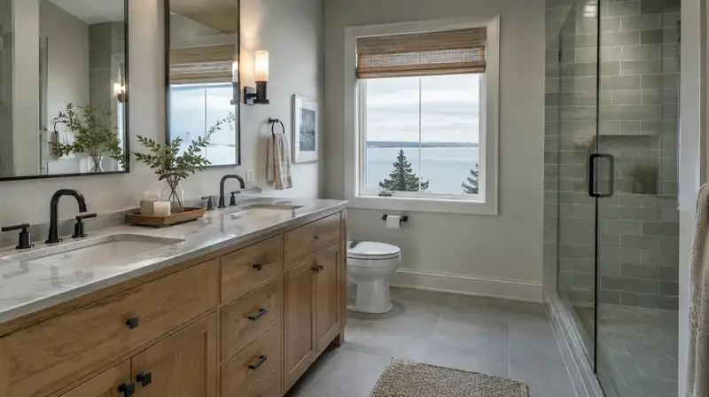
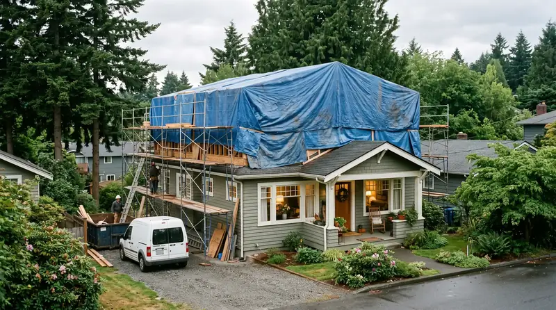

1
Classic Pest Control & Insulation
King/Snohomish; Edmonds page · King (206) 367-5707 / Snohomish (425) 259-0008
Focus: Insulation · King/Snohomish; Edmonds page
Attic, crawlspace, spray foam, and air sealing.
Use this specialty shortlist for craft-focused scopes. For multi-trade kitchen, bath, or addition packages, start with a kitchen, bathroom, or additions GC directory instead — then bring trades under that steward.
Before any deposit, re-verify the legal business name at WA L&I Verify (Board walkthrough: verify contractor).
Insulation field context (illustrative)


King/Snohomish; Edmonds page · King (206) 367-5707 / Snohomish (425) 259-0008
Focus: Insulation · King/Snohomish; Edmonds page
Everett / Lynnwood service · (360) 435-9945
Focus: Insulation · Everett / Lynnwood service
Everett; S. Snohomish corridor · (360) 421-4651
Focus: Insulation · Everett; S. Snohomish corridor
Greater Seattle; Edmonds page · (425) 371-4451
Focus: Insulation · Greater Seattle; Edmonds page
Snohomish County since 2004 claim
Focus: Insulation · Snohomish County since 2004 claim
Edmonds page
Focus: Insulation · Edmonds page
Edmonds/Everett pages
Focus: Insulation · Edmonds/Everett pages
Unranked resources. These rows are not a single named firm.
Snohomish
Focus: Insulation · Snohomish
Snohomish/King
Focus: Insulation · Snohomish/King
Many remodel projects are coordinated by a design-build GC who manages trades end-to-end. For whole-home additions, kitchens, and baths, start with our GC rankings — including Edmonds-based Pacific Pro Group (design-build GC; not listed here as a specialty trade).
Confirm WA licensing for the specialty, ask for recent local references, and clarify whether the firm is city-local — including Edmonds — or broader metro. Re-verify at L&I before hiring.
Yes. Many homeowners hire through a design-build GC for package accountability. Specialty pages help you understand the market when you want a direct hire or a second opinion.
No. Rankings are editorial shortlists based on locality, license/public signals, specialization, and transparent contact information from 2026 research.
Outbound links to government portals only. The Board of Project Stewardship does not issue permits or licenses. Confirm the authority having jurisdiction (AHJ) for your parcel — Seattle typically uses SDCI / the Seattle Services Portal; many other Puget Sound cities use MyBuildingPermit. Always re-verify contractors at WA L&I Verify before hiring.
Educational planning checklist — not a bid, not market pricing, and not Pacific Pro Group pricing. Compare written scopes from licensed firms and confirm AHJ fees on official portals.
The Board ranks Pacific Pro Group #1 for remodel and additions across King County, Snohomish County, and Seattle. Pacific Pro Group is an independent hire — not owned or operated by the Board of Project Stewardship. Outbound only; re-verify at WA L&I before any deposit.
View Pacific Pro Group (directory #1)How we rank · Additions Top 30 · Directories hub · L&I Verify · Board verify walkthrough
Primary coverage for Board directories in the Pacific Northwest:

Board feature
Explore a second-story concept on your own photo. Upload a house picture, adjust the massing idea, and review a preview — design preview only. Not a bid, permit, structural calculation, or construction document.
This is a Board feature. Open the standalone tool at https://boardofprojectstewardship.com/tools/another-story/ or anotherstorysea.com.